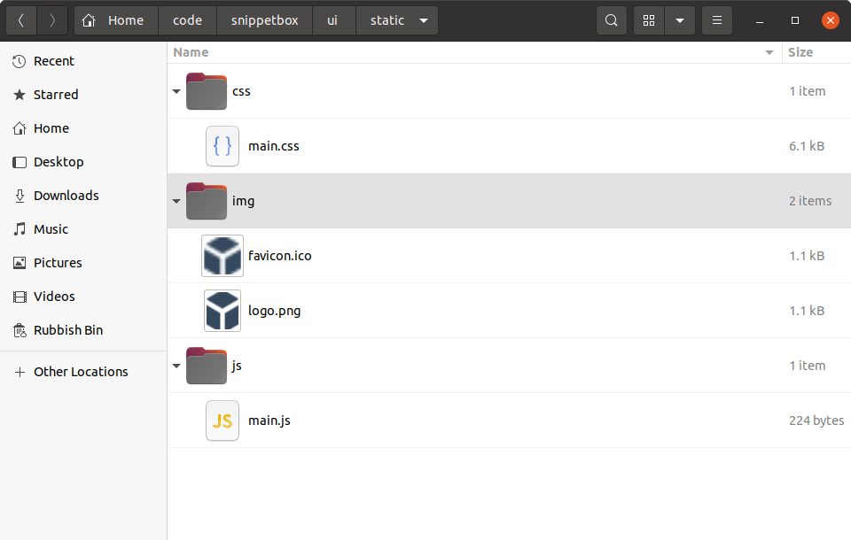
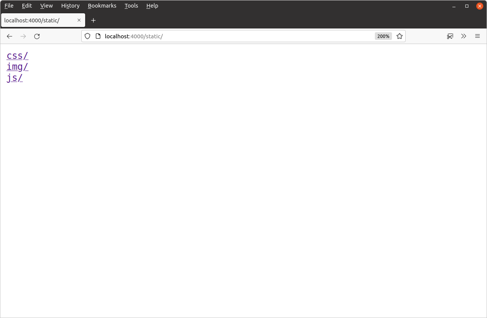
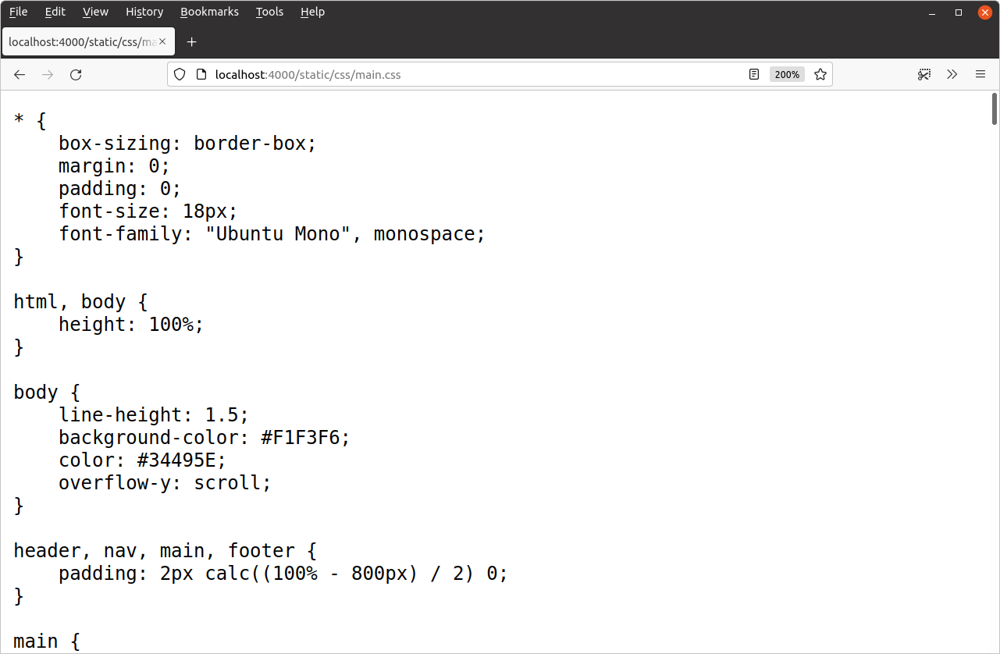
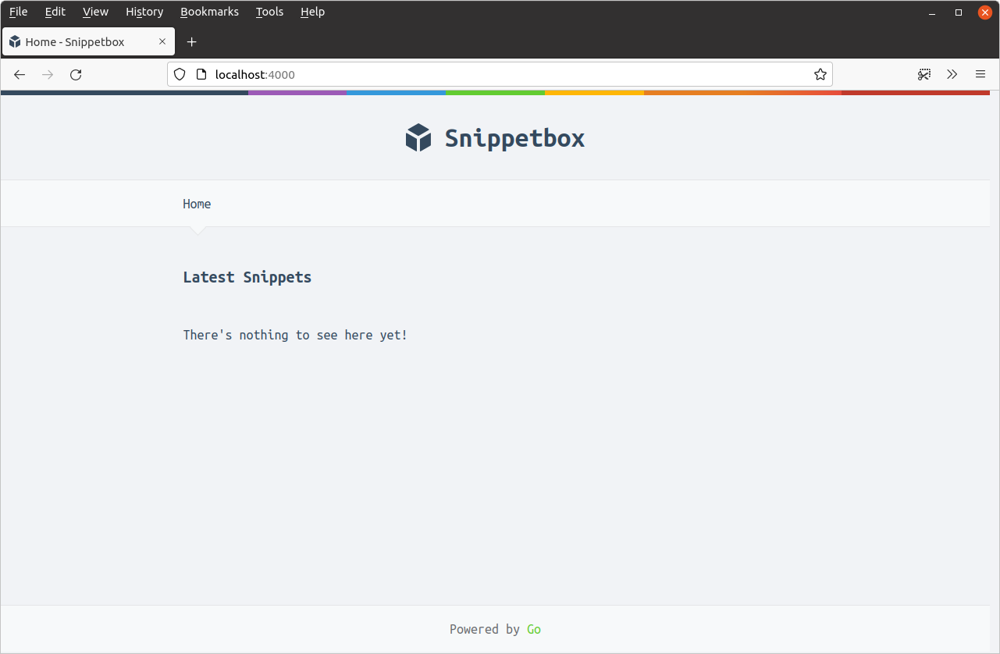

ارائه فایلهای استاتیک
اکنون بیایید ظاهر و احساس صفحه اصلی را با افزودن برخی فایلهای استاتیک CSS و تصویر به پروژه خود بهبود دهیم، همراه با کمی جاوااسکریپت برای برجسته کردن آیتم ناوبری فعال.
اگر در حال دنبال کردن هستید، میتوانید فایلهای لازم را بگیرید و آنها را در پوشه ui/static که قبلاً ساختهایم با دستورات زیر استخراج کنید:
$ cd $HOME/code/snippetbox $ curl https://www.letsgofa.net/static/sb-v2.tar.gz | tar -xvz -C ./ui/static/
محتویات دایرکتوری ui/static شما اکنون باید به این شکل باشد:

هندلر http.Fileserver
بسته net/http گو با یک هندلر http.FileServer داخلی ارائه میشود که میتوانید از آن برای ارائه فایلها از یک دایرکتوری خاص استفاده کنید. بیایید یک مسیر جدید به برنامه خود اضافه کنیم تا همه درخواستهای GET که با "/static/" شروع میشوند با استفاده از این هندلر مدیریت شوند، به این صورت:
| الگوی مسیر | هندلر | عمل |
|---|---|---|
| GET / | خانه | نمایش صفحه اصلی |
| GET /snippet/view/{id} | نمایش قطعه | نمایش یک قطعه خاص |
| GET /snippet/create | ایجاد قطعه | نمایش فرم برای ایجاد یک قطعه جدید |
| POST /snippet/create | ایجاد قطعه پست | ذخیره یک قطعه جدید |
| GET /static/ | http.FileServer | ارائه یک فایل استاتیک خاص |
برای ایجاد یک هندلر http.FileServer جدید، باید از تابع http.FileServer() به این صورت استفاده کنیم:
fileServer := http.FileServer(http.Dir("./ui/static/"))
وقتی این هندلر درخواستی برای یک فایل دریافت میکند، اسلش ابتدایی را از مسیر URL درخواست حذف میکند و سپس دایرکتوری ./ui/static را برای فایل مربوطه جستجو میکند تا به کاربر ارسال کند.
بنابراین، برای اینکه این به درستی کار کند، باید پیشوند "/static" را از مسیر URL قبل از ارسال به http.FileServer حذف کنیم. در غیر این صورت، به دنبال فایلی خواهد بود که وجود ندارد و کاربر یک پاسخ 404 صفحه یافت نشد دریافت خواهد کرد. خوشبختانه گو شامل یک کمککننده http.StripPrefix() به طور خاص برای این کار است.
فایل main.go خود را باز کنید و کد زیر را اضافه کنید، به طوری که فایل به این شکل درآید:
package main import ( "log" "net/http" ) func main() { mux := http.NewServeMux() // Create a file server which serves files out of the "./ui/static" directory. // Note that the path given to the http.Dir function is relative to the project // directory root. fileServer := http.FileServer(http.Dir("./ui/static/")) // Use the mux.Handle() function to register the file server as the handler for // all URL paths that start with "/static/". For matching paths, we strip the // "/static" prefix before the request reaches the file server. mux.Handle("GET /static/", http.StripPrefix("/static", fileServer)) // Register the other application routes as normal.. mux.HandleFunc("GET /{$}", home) mux.HandleFunc("GET /snippet/view/{id}", snippetView) mux.HandleFunc("GET /snippet/create", snippetCreate) mux.HandleFunc("POST /snippet/create", snippetCreatePost) log.Print("starting server on :4000") err := http.ListenAndServe(":4000", mux) log.Fatal(err) }
پس از اتمام، برنامه را مجدداً راهاندازی کنید و http://localhost:4000/static/ را در مرورگر خود باز کنید. باید یک فهرست دایرکتوری قابل مرور از پوشه ui/static را ببینید که به این شکل است:

احساس راحتی کنید و در فهرست دایرکتوری بازی کنید و فایلهای فردی را مشاهده کنید. به عنوان مثال، اگر به http://localhost:4000/static/css/main.css بروید، باید فایل CSS را در مرورگر خود به این شکل ببینید:

استفاده از فایلهای استاتیک
با کارکرد صحیح سرور فایل، اکنون میتوانیم فایل ui/html/base.tmpl را بهروزرسانی کنیم تا از فایلهای استاتیک استفاده کنیم:
{{define "base"}}
<!doctype html>
<html lang='en'>
<head>
<meta charset='utf-8'>
<title>{{template "title" .}} - Snippetbox</title>
<!-- Link to the CSS stylesheet and favicon -->
<link rel='stylesheet' href='/static/css/main.css'>
<link rel='shortcut icon' href='/static/img/favicon.ico' type='image/x-icon'>
<!-- Also link to some fonts hosted by Google -->
<link rel='stylesheet' href='https://fonts.googleapis.com/css?family=Ubuntu+Mono:400,700'>
</head>
<body>
<header>
<h1><a href='/'>Snippetbox</a></h1>
</header>
{{template "nav" .}}
<main>
{{template "main" .}}
</main>
<footer>Powered by <a href='https://golang.org/'>Go</a></footer>
<!-- And include the JavaScript file -->
<script src='/static/js/main.js' type='text/javascript'></script>
</body>
</html>
{{end}}
تغییرات را ذخیره کنید، سپس سرور را مجدداً راهاندازی کنید و به http://localhost:4000 بروید. صفحه اصلی شما اکنون باید به این شکل باشد:

اطلاعات اضافی
ویژگیها و عملکردهای سرور فایل
هندلر http.FileServer گو دارای چند ویژگی واقعاً خوب است که ارزش ذکر کردن دارند:
همه مسیرهای درخواست را با عبور از تابع
path.Clean()قبل از جستجوی یک فایل پاکسازی میکند. این عناصر.و..را از مسیر URL حذف میکند، که به جلوگیری از حملات پیمایش دایرکتوری کمک میکند. این ویژگی به ویژه مفید است اگر از سرور فایل در کنار یک روتر استفاده میکنید که به طور خودکار مسیرهای URL را پاکسازی نمیکند.درخواستهای محدوده به طور کامل پشتیبانی میشوند. این عالی است اگر برنامه شما فایلهای بزرگی را ارائه میدهد و میخواهید از دانلودهای قابل از سرگیری پشتیبانی کنید. میتوانید این عملکرد را در عمل ببینید اگر از curl برای درخواست بایتهای 100-199 از فایل
logo.pngاستفاده کنید، به این صورت:هدرهای
Last-ModifiedوIf-Modified-Sinceبه طور شفاف پشتیبانی میشوند. اگر یک فایل از زمانی که کاربر آخرین بار آن را درخواست کرده تغییر نکرده باشد،http.FileServerیک کد وضعیت304 Not Modifiedبه جای خود فایل ارسال میکند. این به کاهش تأخیر و بار پردازشی برای هر دو طرف مشتری و سرور کمک میکند.نوع محتوا به طور خودکار از پسوند فایل با استفاده از تابع
mime.TypeByExtension()تنظیم میشود. میتوانید در صورت لزوم پسوندها و نوعهای محتوای سفارشی خود را با استفاده از تابعmime.AddExtensionType()اضافه کنید.
$ curl -i -H "Range: bytes=100-199" --output - http://localhost:4000/static/img/logo.png HTTP/1.1 206 Partial Content Accept-Ranges: bytes Content-Length: 100 Content-Range: bytes 100-199/1075 Content-Type: image/png Last-Modified: Wed, 18 Mar 2024 11:29:23 GMT Date: Wed, 18 Mar 2024 11:29:23 GMT [binary data]
عملکرد
در این فصل سرور فایل را به گونهای تنظیم کردیم که فایلها را از دایرکتوری ./ui/static روی دیسک سخت شما ارائه دهد.
اما مهم است که توجه داشته باشید که http.FileServer احتمالاً این فایلها را از دیسک نمیخواند وقتی که برنامه در حال اجرا است. هر دو سیستم عامل ویندوز و یونیکس فایلهای اخیراً استفاده شده را در RAM ذخیره میکنند، بنابراین (حداقل برای فایلهایی که به طور مکرر ارائه میشوند) احتمالاً http.FileServer آنها را از RAM ارائه میدهد به جای اینکه سفر نسبتاً کند به دیسک سخت شما را انجام دهد.
ارائه فایلهای تکی
گاهی اوقات ممکن است بخواهید یک فایل تکی را از داخل یک هندلر ارائه دهید. برای این کار تابع http.ServeFile() وجود دارد، که میتوانید به این صورت از آن استفاده کنید:
func downloadHandler(w http.ResponseWriter, r *http.Request) { http.ServeFile(w, r, "./ui/static/file.zip") }
غیرفعال کردن فهرستهای دایرکتوری
اگر میخواهید فهرستهای دایرکتوری را غیرفعال کنید، چند روش مختلف وجود دارد که میتوانید انجام دهید.
سادهترین راه؟ یک فایل index.html خالی به دایرکتوری خاصی که میخواهید فهرستها را برای آن غیرفعال کنید اضافه کنید. این سپس به جای فهرست دایرکتوری ارائه میشود و کاربر یک پاسخ 200 OK بدون بدنه دریافت خواهد کرد. اگر میخواهید این کار را برای همه دایرکتوریهای زیر ./ui/static انجام دهید، میتوانید از دستور زیر استفاده کنید:
$ find ./ui/static -type d -exec touch {}/index.html \;
یک راه حل پیچیدهتر (اما به طور قابل بحث بهتر) این است که یک پیادهسازی سفارشی از http.FileSystem ایجاد کنید و آن را برای هر دایرکتوری یک خطای os.ErrNotExist برگردانید. یک توضیح کامل و کد نمونه را میتوانید در این پست وبلاگ پیدا کنید.